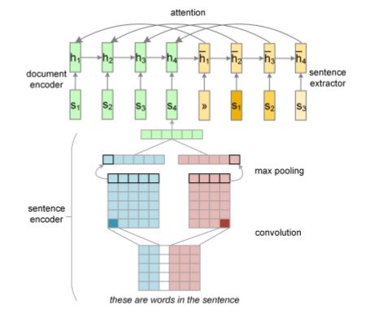

Abstract
Traditional approaches to extractive summarization rely heavily on human-engineered features.We develop a data-driven frame-work for single-document summarization compose of a hierarchical document encoder and an attention-based extractor.We train our models on large scale corporacontaining hundreds of thousands of document-summary pairs. Experimental results on two summarization datasets demonstrate that our models obtain results comparable to the state of the art without any access to linguistic annotation.Introduction
The need to digest large amounts of textual data has increased the demand of automatic summarization systems aiming to create shorter versions of one or more documents, whilst preserving their information content. The idea of creating a summary by extracting words from the source document was pioneered in Banko et al. (2000) who view summarization as a problem analogous to statistical machine translation and generate headlines using statistical models for selecting and ordering the summary words. Our model includes a neural network-based hierarchical document reader or encoder and an attention-based content extractor. The role of the reader is to derive the meaning representation of a document based on its sentences and their constituent words. Our models adopt a variant of neural attention to extract sentences or words.Problem Statement
Given a document D consisting of a sequence of sentences (s1,...,sm) and a word set (w1,...,wn), we are interested in obtaining summaries. Sentence extraction aims to create a summary from D by selecting a subset of j sentences (where j < m). We do this by scoring each sentence within D and predicting a label yL { 0,1 } indicating whether the sentence should be included in the summary. As we apply supervised training, the objective is to maximize the likelihood of all sentence labels yL = (y1L, . . . ymL ) given the input document D and model parameters thetaTraining Data for Summarization
Data-driven neural summarization models require a large training corpus of documents with labels indicating which sentences (or words) should be in the summary. Until now such corpora have been limited to hundreds of examples . To overcome the paucity of annotated data for training we create dataset for sentence extraction .We retrieved hundreds of thousands of news articles and their correspondinghighlights from DailyMail.The highlights (created by news editors) are genuinely abstractive summaries and therefore not readily suited to supervised training To create the training data forsentence extraction, we reverse approximated the gold standard label of each document sentence given the summary based on their semantic correspondence.Neural Summarization Model
The key components of our summarization model include a NN based hierarchical document reader and an attention-based hierarchical content extractor.The hierarchical nature of our model reflects the intuition that documents are generated compositionally from words, sentences, paragraphs, or even larger units.

Document Reader
The role of the reader is to derive the meaning representation of the document from its constituent sentences, each of which is treated as a sequence of words. To obtain vector representation of sentences we use CNN with a max-over-time pooling operation.Then we build representations for documents using a standard recurrent neural network(RNN) that recursively composes sentences.
Convolutional Sentence Encoder
Let d denote the dimension of word embeddings, and s a document sentence consisting a sequence of words (w 1 , ....w n ) which can be represented by a dense column matrix. We apply a temporal narrow convolution between W and a kernel K. We use kernels of width two and three and each six filters for each kernel.
Recurrent Document Encoder
At the document level, a recurrent neural network composes a sequence of sentence vectors into a document vector.The RNN we used has a Long Short-Term Memory (LSTM) activation unit for ameliorating the vanishing gradient problem when training long sequences